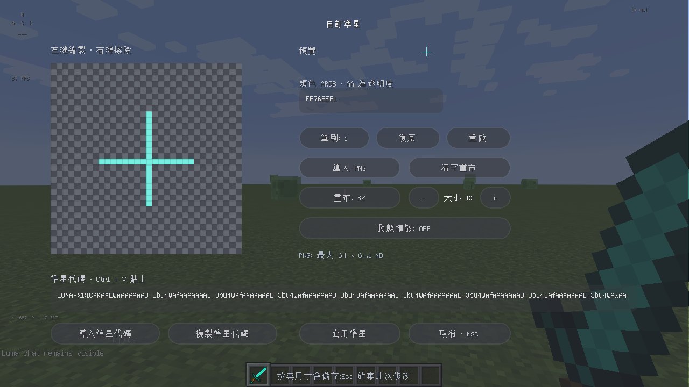

01 / MAKE IT YOURS
你的準星，
由你畫出來。
在遊戲內編輯準星，繪製像素、匯入 PNG，或貼上準星代碼。滿意後複製自己的代碼，和朋友分享同一套手感。
遊戲內編輯代碼匯入／匯出
BUILT AROUND YOU
自由擺放你的 HUD、畫出自己的準星，讓需要的資訊留在眼前。Luma 把啟動、內置功能與版本管理，放進同一個工作空間。
01 / MAKE IT YOURS
在遊戲內編輯準星，繪製像素、匯入 PNG，或貼上準星代碼。滿意後複製自己的代碼，和朋友分享同一套手感。
遊戲內編輯代碼匯入／匯出
02 / LESS IN THE WAY
WASD、FPS、Ping、CPS 與座標自由擺放。每個 HUD 可調整寬度、高度與大小，座標可獨立選擇 X、Y、Z，搭配透明背景，減少遮擋。
03 / ONE PLACE TO TUNE
搜尋內置功能、切換開關、右鍵進入設定。暗色透明面板集中管理你的配置，Esc 即可關閉；設定檔也能匯入，方便保留熟悉的配置。
04 / READY FOR BEDWARS
Bedwars 精簡設定集合小尺寸記分板、透明聊天、CPS 與延遲資訊。TNT 倒數接近爆炸時變色提醒，並追蹤鐵、金、鑽石與綠寶石數量。
套用前可預覽，並保留設定備份。這是介面與資訊配置優化，不代表勝率或 FPS 保證。
05 / MORE WORLDS TO OPEN
從 Minecraft 官方版本目錄選擇正式版本、快照、舊 Beta 與 Alpha，搜尋後下載並校驗遊戲檔案。Java 執行環境可自行選擇，支援依遊戲需求準備相容版本。
內置 Luma Core 適用 Forge 1.8.9；其他版本目前提供原版啟動，不包含 Core 跨版本移植。
THE CORE COLLECTION / 1.8.9
以下列出目前已接入的內置功能與實際作用。你可以在遊戲內選擇需要的項目，依自己的習慣配置。
即時遊戲幀率，以純文字顯示。
分別統計最近一秒的左鍵與右鍵點擊。
WASD 與空白鍵的即時狀態；滑鼠點擊數由 CPS 顯示。
用文字顯示目前裝備的耐久度。
目前生效的藥水、等級與倒數時間。
顯示原版護甲值；不冒充完整附魔減傷計算。
本機攻擊事件的眼睛到目標碰撞箱距離。
本機攻擊序列計數；受傷或逾時重設，不表示伺服器確認命中。
生命、吸收生命與目前連擊資訊。
按原版疾跑鍵切換。符合原版飢餓、移動與碰撞限制才疾跑。
按蹲下鍵切換持續蹲下；開啟介面時暫停，關閉功能後恢復按住操作。
受傷時在畫面四周顯示淡紅警示。
停用受傷時的鏡頭搖晃。受傷邊框保持獨立設定；關閉本項即還原原版動作。
啟用原版實體碰撞箱顯示，關閉時還原。
顯示 XYZ 方塊座標，可單獨選擇 X、Y、Z。
遊戲連線列表中的網路延遲，以純文字顯示。
根據伺服器時間封包估算 TPS；尚未收到足夠封包或資料過期時顯示 --。
進入世界後經過的時間。
Java 堆積記憶體的用量與上限。
以實際時間計算水平位移，單位為方塊／秒。
電腦的本地時間。
遊戲中按 P 開始／暫停，Shift+P 歸零。
遊戲中按 O 啟動／重設指定秒數的倒數。
統計主背包中與手持物品相同種類、資料值的總量。
自訂最多八種物品 ID，顯示背包數量；忽略無效的 ID。
顯示準心指向方塊的名稱與座標。
顯示手持物品名稱、耐久及附魔提示。
顯示目前已載入的資源包名稱。
目前伺服器位址或單人世界標記。
目前 Tab 玩家列表中的人數。
十字、圓點或圓環準心，可調顏色與大小。
調整記分板大小、字體、背景與分數顯示。
隱藏原版 Boss 血條。
隱藏 Tab 玩家列表。
分別選擇 F3 顯示的幀率、座標、Java 版本與記憶體欄位。
顯示目前與鄰近區塊的邊界，可調整範圍。
自訂目標方塊的外框顏色、線寬與填色透明度。
調整水下霧氣濃度；關閉功能後恢復原版視野。
調整遠景迷霧的距離與顏色，可保留世界原本的顏色。
移除疾跑與拉弓造成的動態視角倍率。
按住 C 放大視角，鬆開即還原；倍率可調整。
提高本機畫面亮度，關閉後恢復原亮度。無須藥水，不修改伺服器狀態。
調整粒子數量，以及一般粒子和方塊碎片的大小與顏色；關閉後立即恢復渲染。
設定畫面顯示的世界時間，渲染結束後還原世界狀態。
調整本機雨雪強度，渲染結束後還原原本天氣。
顯示已點燃 TNT 的剩餘秒數，可調整最遠顯示距離。
顯示目前 Y 座標、設定的建築高度上限和剩餘高度。
隱藏聊天訊息後方的黑色底板，保留文字、淡出、捲動與訊息連結。
標記附近低亮度、上方有空間的完整方塊，可調整亮度門檻與範圍。
下落時預測落點並顯示外框；不自動放置物品。
連線時啟用 TCP_NODELAY，關閉後恢復連線原本的設定。
WHY LUMA
Luma 的選擇理由，是把啟動器和遊戲內個人化放在一起。以下比較使用方式，並不表示其他啟動器都缺少這些能力。
| 你想做的事 | 自行組裝的方式 | Luma 的整合方式 |
|---|---|---|
| 調整遊戲資訊 | 分別安裝 HUD 模組，再管理各自設定 | Core 內集中開關、搜尋及編輯 HUD |
| 製作準星 | 尋找準星模組或編輯資源包 | 遊戲內繪製、PNG 匯入、分享準星代碼 |
| 準備 Bedwars 畫面 | 逐一整理記分板、聊天與資源資訊 | 預覽並套用一組精簡配置，再自行微調 |
| 管理版本與額外模組 | 搭配不同下載來源與設定工具 | 官方遊戲目錄與 Modrinth 下載入口集中管理 |
| 選擇適合的產品 | 成熟的通用啟動器可能具有更完整的跨版本生態 | 適合重視 1.8.9 遊戲內自訂與簡潔介面的玩家 |
目前沒有與其他客戶端的同條件效能測試，因此不宣稱更高 FPS、更低記憶體或更低延遲。各伺服器規則不同，請依規則使用功能。
更新前先關閉 Luma 與遊戲，備份原有 luma-data、存檔與設定，再遷移至新版資料夾。不要覆蓋或刪除自己的存檔。
WHAT’S NEW
2.0.0 是 Luma 正式版的版本名稱。Core 已整合 51 項功能，另有 36 項仍在規劃或開發；未完成項目不列為已提供功能。Core 目前只支援 Forge 1.8.9。
本次通過 45 項程式測試與 1.8.9 遊戲內 QA；Minecraft 26.2 已完成檔案校驗並啟動至首次使用畫面。官方目錄會持續更新，不代表其中每個歷史版本皆已逐一測試。
BUILD THE NEXT CHAPTER
想增加一個快捷鍵、改善某個畫面，或遇到啟動問題？把實際情境告訴我們，讓每次更新有明確方向。
建議與回報會前往 GitHub，由你確認後送出，需要 GitHub 帳號。內容公開，請勿上傳密碼、登入權杖或含個人資訊的完整日誌。
查看公開討論與處理進度GOOD TO KNOW
Luma 免費提供下載，並不附贈 Minecraft。正版帳號登入與需驗證的多人伺服器仍需有效的 Minecraft Java 遊戲授權。
目前沒有。Luma Core 的內置功能適用 Forge 1.8.9，其他版本提供官方遊戲下載與啟動。跨版本 Core 適配尚未完成。
啟動器提供 Modrinth 下載入口。額外模組仍需符合遊戲版本、載入器與相依性；不保證任意模組都相容，也不保證能在遊戲運行中停用。
本頁不要求 Minecraft 密碼，也沒有自建帳號表單。下載與問題回報使用 GitHub，登入使用 Microsoft；這些服務及網站託管平台各自適用其隱私政策。